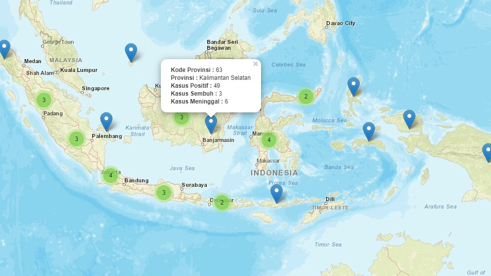

WebGIS Kementerian Desa
Kementerian Desa memotret perkembangan kemandirian Desa berdasarkan implementasi Undang-Undang Desa dengan dukungan Dana Desa serta Pendamping Desa.

Peta Tanah Semi Detail
Menampilkan peta tanah semi detail wilayah Indonesia melalui bantuan satelit penginderaan jarak jauh dan sistem informasi geografis (GIS).
POI Fasilitas Publik
Pencarian fasilitas publik lebih mudah dan tepat melalui bantuan GPS dan sistem informasi geografis (GIS).